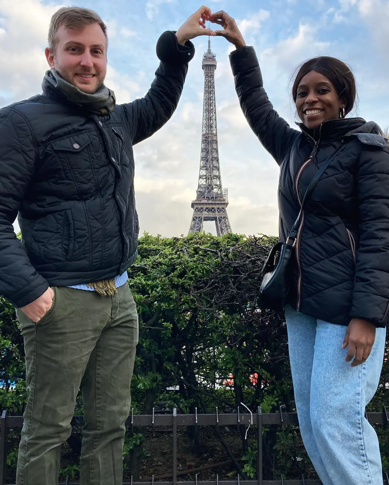
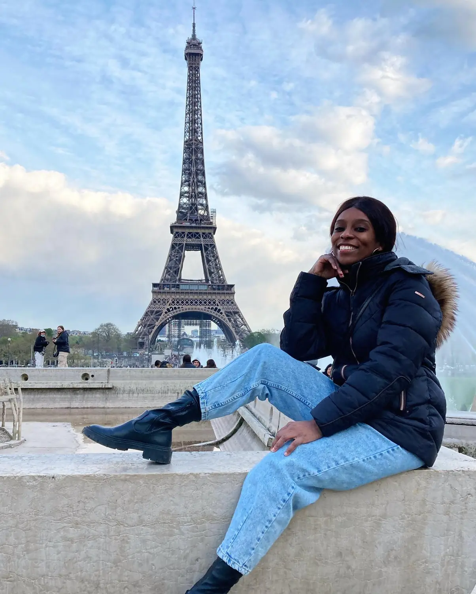

Must-see01
The Eiffel Tower from the Trocadéro
📍 Trocadéro
For the most famous view of the Eiffel Tower, head to the Trocadéro across the river. The terrace and the fountains below frame the tower perfectly, and it's where we took so many of our favourite photos. Go early in the morning for a quieter terrace.
Best photo spotGo early